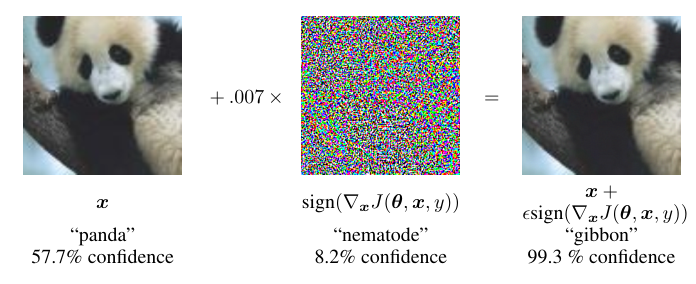

One gradient step still fools image classifiers, a decade on
Goodfellow, Shlens, and Szegedy's 2015 paper blamed the panda-to-gibbon trick on models being too linear, a claim later work disputes, and proposed a defense that had to be rebuilt before it worked.
Why this matters
You have probably seen the panda that a neural network was certain was a gibbon. It is one of the most reproduced images in machine learning, and it usually arrives with no explanation. The paper behind it, from 2015, did two things. It named the reason a picture can be changed by an amount too small to see and still flip to a confident wrong answer. And it turned that weakness into a way to train sturdier models. The same weakness now shows up in stop signs a car misreads and in filters that spammers slip past. By the end you will know what the paper claimed, how its one-line attack works, and how much of it a decade of harder tests left standing.
- 01
- Adversarial machine learning: a map of where these attacks and defenses sit in the wider field.
- 02
- Going Deeper with Convolutions: GoogLeNet, the classifier fooled in the panda demonstration.
The panda that turned into a gibbon
In 2015, three Google researchers, Ian Goodfellow, Jonathon Shlens, and Christian Szegedy, took a photograph of a panda that their image classifier, GoogLeNet, labeled correctly with 57.7% confidence. They added faint noise whose largest change to any pixel was 0.007, the smallest step a single bit of an eight-bit color value can make. The two images look identical to a person. GoogLeNet read the second as a gibbon, and it was 99.3% confident.1

The paper is called “Explaining and Harnessing Adversarial Examples,” and the picture is only its advertisement. The title names what it delivered: an explanation for why a change too small to see can flip a confident answer, and a method that turns the same weakness into a defense. Both parts have been argued over ever since.
The blind spots came first
The images were not new in 2015. A year earlier, Christian Szegedy and six colleagues, Goodfellow among them, had published “Intriguing Properties of Neural Networks,” the paper that first exhibited adversarial examples.2 They found the images by search. For a correctly classified picture, they looked for the smallest pixel change that would flip its label. They found one every time: on handwritten digits, on ImageNet photographs, and on a network with about a billion parameters trained on frames from YouTube. Every change was almost too small to see.
The finding that unsettled people was transfer. An adversarial image built to fool one network was often still misread by a second network trained separately, with different settings or on different data.2 That is not how a random glitch behaves. But the 2013 paper offered no account of why it happened. It described the images as blind spots, rare pockets of input space that training had never covered.
Two of that paper's authors, Goodfellow and Szegedy, wrote the 2015 paper too. This was not one camp correcting another. It was the same researchers returning to a phenomenon they had helped find, now with an explanation.
Too linear, not too complex
The natural suspect is complexity. A modern classifier has millions of parameters and many nonlinear layers, so a picture that fools it looks as though it found some strange, narrow crevice. The 2013 blind-spots framing fit that suspicion. The 2015 paper argued the reverse: the main cause is that the networks behave too linearly, not too strangely.1 Linear behavior in high-dimensional spaces, the paper says, is by itself enough to produce adversarial examples.
Linearity is enough on its own, for a concrete reason. One part of the model works as a weighted sum: it adds up its inputs, each pixel times a weight that is positive or negative. An image has thousands of pixels. Nudging each one the way its weight rewards, up for a positive weight and down for a negative one, is on its own far below what an eye can register. But the thousands of nudges all push the sum the same way. Together they add up to one large move in the model's score, enough to flip the label. Each pixel stays under the threshold of sight. The total does not.
That also explains the transfer the earlier paper could not. Two networks trained on similar data weight the pixels in similar directions, so a change aligned against one is aligned against the other.
And it hands the attacker the cheapest possible move. If the damage comes from matching each pixel's change to the sign of the model's gradient, the fastest attack is to compute that sign once and apply it. The paper named the recipe the fast gradient sign method, and it fits on one line.
- \etathe pattern added to every pixel of the image.
- \epsilonhow far each pixel is allowed to move, 0.007 in the panda demonstration.
- \operatorname{sign}keep only the direction of each pixel's push, up or down, and drop its size.
- \nabla_{\!x}\, Jthe gradient of the model's loss with respect to the input, from one backward pass.
The gradient of the loss, the quantity training works to push down, comes from a single backward pass. Its sign at each pixel gives the direction. A small step in that direction, added to the image, is the entire perturbation. That single pass is what made the attack cheap enough to run across a whole test set. For the panda that step was 0.007.1
The panda is one picture, but the attack was not special to it. On MNIST, a set of handwritten digits, one of the paper's networks that normally misreads well under 1% of test images misread 89.4% of the adversarial digits, and stayed 97.6% confident while it was wrong. A shallower model missed 99.9% of them.1
Training on the attack
The paper's title promises to harness adversarial examples, and this is the harness. Because the attack is one cheap function, it can run inside the training loop: at each step the model makes adversarial versions of its training images, is given their correct labels, and learns those too. The model is trained against its own weakness.
On the digits it worked. The same network, trained this way, cut its error on adversarial digits from 89.4% to 17.9%, while its error on ordinary digits barely moved.1
| Training | Error on ordinary digits | Error on adversarial digits |
|---|---|---|
| Standard | 0.94% | 89.4% |
| Adversarial | 0.84% | 17.9% |
The lesson the paper drew was hopeful: the cheap attack doubled as a cheap defense, and a model shown enough adversarial examples would learn to shrug them off.
Neither solved nor stuck
The trouble reached the paper's own defense first. In 2018 Aleksander Madry and four colleagues showed that single-step adversarial training, the exact method the paper proposed, buys very little real protection. A model trained only against the one-step attack learns to beat that one attack and stays wide open to a stronger one, an effect later called gradient masking: the defense hides the gradient the attacker reads instead of removing the weakness.3 Their fix kept the idea and changed the attack inside it: in place of one step, many small ones, staying inside the allowed budget. They call the result projected gradient descent, a multi-step version of the fast gradient sign method. Train against that, and the model keeps real accuracy under real pressure.3 Adversarial training survived. The single-step version the paper used did not.
The paper's defense was not the only one to fall. A wave of defenses published after 2015 turned out to be the same illusion. In a 2018 study of nine defenses accepted at a leading conference, Anish Athalye, Nicholas Carlini, and David Wagner found that seven relied on obfuscated gradients, gradient masking under other names. New attacks built to see through the masking broke six of them completely and one in part.4 They had looked robust only because the standard attacks could not find the openings.
What held was the rebuilt version. A model trained against a strong multi-step attack is genuinely harder to fool. On MNIST, Madry's trained model kept about 89% accuracy under the strongest attack the team tried. On CIFAR-10, a harder set of small photographs, it held about 46% under a twenty-step attack that would push an undefended model to near zero.3 Six years later the record on that same CIFAR-10 setting had risen to about 74%, against about 94% on untouched images.5 That is real progress and a wide remaining gap at once. The group that set the mark argues it will not fully close: its scaling analysis has robustness rising slowly, then flattening well short of clean accuracy, with perfect robustness out of reach.5
The explanation fared no better than the defense. The too-linear claim never settled into a consensus. In 2016 Thomas Tanay and Lewis Griffin built simple image classes on which a linear model is perfect and has no adversarial examples at all, so linearity cannot by itself be the cause. They proposed instead that the trouble is geometric, a decision boundary tilted to sit close to the data.6 In 2019 Andrew Ilyas and colleagues offered a different account again: the perturbations exploit real, predictive patterns in the data that are simply invisible to people. In their experiment, a model trained only on those invisible patterns still classified ordinary test images correctly about 44% of the time. That works only if the patterns carry genuine signal.7 A survey the year before had already found no agreement in the field on why the images exist.8
The danger also lives elsewhere. The panda attack is a change too small to see, but physical attacks are often the opposite. In 2018 a team stuck patches that look like ordinary graffiti onto a real stop sign, and a road-sign classifier read it as a 45 mph speed-limit sign in every lab image and in 84.8% of frames filmed from a moving car.9 The change was plainly visible. The imperceptible perturbation the 2015 paper studied is one setting among several.
The takeaway
The 2015 paper got the harder half right and the easier half wrong. Its cheap attack was real and is still cheap: one gradient, one step, and an undefended image model falls. Its hopeful defense needed rebuilding, and adversarial training only works with a strong, many-step attack inside it, not the single-step version the paper used. Its explanation, that models fail because they are too linear, never became the settled answer, and competing accounts left it one hypothesis among several. The fix that did hold is real but partial: the best defended models still miss about a quarter of the hardest CIFAR-10 attacks. The panda still turns into a gibbon, and a decade of work has not stopped it. What the decade produced instead is a measure of the problem: how small the change can be, and how far the strongest defenses still fall short.
- 01
- RobustBench: a live leaderboard of the best adversarial robustness reported today, updated as new defenses land.
- 02
- A Discussion of “Adversarial Examples Are Not Bugs, They Are Features”: researchers debate the non-robust-features account.
Sources
- arXiv · Goodfellow, Shlens & Szegedy, “Explaining and Harnessing Adversarial Examples” (ICLR 2015)
- arXiv · Szegedy, Zaremba, Sutskever, Bruna, Erhan, Goodfellow & Fergus, “Intriguing Properties of Neural Networks” (ICLR 2014)
- arXiv · Madry, Makelov, Schmidt, Tsipras & Vladu, “Towards Deep Learning Models Resistant to Adversarial Attacks” (ICLR 2018)
- arXiv · Athalye, Carlini & Wagner, “Obfuscated Gradients Give a False Sense of Security” (ICML 2018)
- arXiv · Bartoldson, Diffenderfer, Parasyris & Kailkhura, “Adversarial Robustness Limits via Scaling-Law and Human-Alignment Studies” (ICML 2024)
- arXiv · Tanay & Griffin, “A Boundary Tilting Perspective on the Phenomenon of Adversarial Examples” (2016)
- arXiv · Ilyas, Santurkar, Tsipras, Engstrom, Tran & Madry, “Adversarial Examples Are Not Bugs, They Are Features” (NeurIPS 2019)
- arXiv · Akhtar & Mian, “Threat of Adversarial Attacks on Deep Learning in Computer Vision: A Survey” (IEEE Access 2018)
- arXiv · Eykholt, Evtimov, Fernandes, Li, Rahmati, Xiao, Prakash, Kohno & Song, “Robust Physical-World Attacks on Deep Learning Visual Classification” (CVPR 2018)